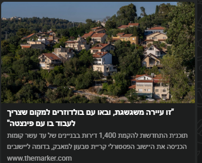

״באו עם בולדוזרים למקום שצריך לעבוד בו בפינצטה״

״זו עיירה משגעת, ובאו עם בולדוזרים למקום שצריך לעבוד בו בפינצטה״
תוכנית ההתחדשות להקמת 1,400 דירות בבניינים של עד עשר קומות במרכז אחד היישובים הפסטורליים בקריית טבעון למאבק, בחדרה ליישובים
www.themarker.com
"באו לקריית טבעון עם בולדוזרים למקום שצריך לעבוד בו עם פינצטה" - סוףשבוע - TheMarker